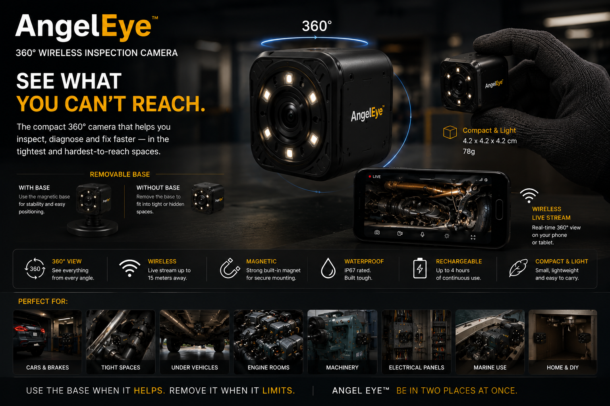

Marine Engineers & Skippers
- Watch chain counters while repairing windlass wiring.
- Monitor bilges, shaft seals, belts and generators.
- Check exhaust water flow during generator startup.
- Observe hydraulic gangways, pumps and engine-room components.
Wireless inspection camera concept
Angel Eye is a small wireless camera that sticks where you need visibility — engine rooms, workshops, control panels, machinery spaces, garages, or at home.

Origin Story
Angel Eye came from a real marine maintenance problem. An engineer was testing an anchor chain counter while working on wiring. He needed one person inside the cockpit watching the screen while he worked elsewhere.
That second person was not repairing anything — they were simply acting as a second pair of eyes.
Angel Eye solves that. Place the camera by the display, stream it to your phone, and work alone.
Real Uses
Anchor windlass diagnostics, chain counters, engine rooms, bilges, generators, shaft seals and control panels.
Fluid leaks, brake lights, suspension checks, under-engine views, exhaust leaks and moving component diagnostics.
Machinery monitoring, HVAC checks, electrical panels, pumps, motors, wiring tests and hard-to-reach equipment.
Pet monitoring, garage security, deliveries, baby monitoring, elderly care and temporary plug-in camera use.
The problem
Angel Eye came from a real marine maintenance problem: an engineer was testing an anchor chain counter while working on wiring. He needed one person inside the cockpit watching the screen while he worked elsewhere. That person was not repairing anything — they were simply acting as a second pair of eyes.
Angel Eye solves that. Place the camera by the display, stream it to your phone, and work alone.
Real-world uses
Concept features
Most cameras record. Angel Eye helps you work. It gives mechanics, technicians, engineers and homeowners an instant second pair of eyes exactly where they need it.
Prototype stage
The first version will focus on live wireless viewing, magnetic mounting, LED lighting, rechargeable battery use, and plug-in home monitoring.